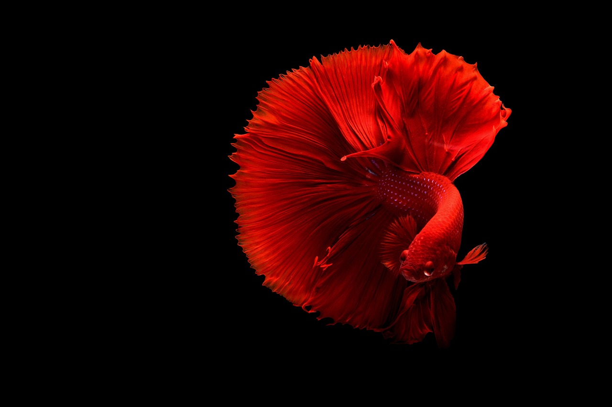

Todo sobre los peces betta:la guia perfecta para mantener feliz a tu pez asiatico favorito.
Originarios de las aguas poco profundas de Tailandia (antiguamente Siam), Camboya y Vietnam, los bettas salvajes viven en arrozales, pantanos y arroyos de movimiento lento. Estas aguas suelen ser cálidas, ácidas y con poco oxígeno.
Para sobrevivir en este entorno, desarrollaron un órgano especial llamado laberinto, que les permite respirar aire directamente de la superficie. Esta es la razón por la que a menudo los verás subir a tomar una bocanada de aire
Ver mas...